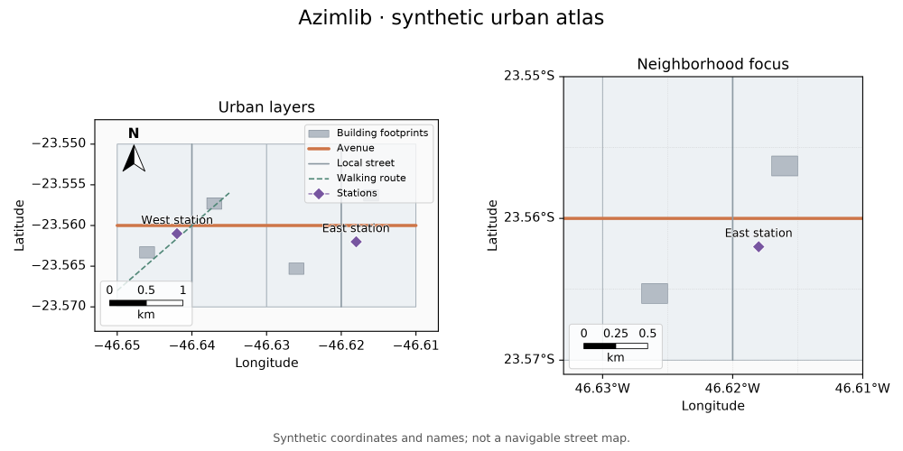

Mapas urbanos — primeira base da 0.3.0
A branch de desenvolvimento acrescenta entrada CSV, seleção por atributos e quatro conveniências urbanas. Estes recursos ainda não fazem parte do pacote 0.2.0 publicado. Veja a checklist da 0.3.0.
import azimlib as azl
points = azl.read_csv("stations.csv", longitude="longitude", latitude="latitude",
id_column="id", converters={"population": int})
fig, ax = azl.subplots(projection="mercator")
stations = ax.cities(points, marker="o", markersize=6, label="Stations")
ax.labels(stations, field="name", halo="white")
ax.set_title("Stations")
fig.savefig("stations.svg")
import azimlib.pyplot as plt continua oferecendo a mesma criação de figuras
e o mesmo viewer. A leitura de dados permanece disponível em azimlib.
Dados e contratos
| Método | Geometrias aceitas | Significado |
|---|---|---|
ax.cities(data) |
Point, MultiPoint | Centros urbanos ou POIs; não limites municipais |
ax.neighborhoods(data) |
Polygon, MultiPolygon | Limites fornecidos de bairros |
ax.streets(data) |
LineString, MultiLineString | Traçados de ruas; não grafo de roteamento |
ax.buildings(data) |
Polygon, MultiPolygon | Plantas de construções; não extrusões 3D |
Os quatro métodos aceitam os mesmos dados de geojson(), style(feature),
fit, aliases visuais, where={"campo": valor} e crs explícito, atualmente
EPSG:4326/3857. Geometrias incompatíveis são rejeitadas antes de alterar limites
ou camadas. Geometrias nulas são preservadas e não desenhadas. Uma seleção vazia
cria uma camada vazia sem mudar a vista. fit=False preserva a vista existente.
Linhas, bordas e markersize usam pontos tipográficos, não metros no solo.
Um atributo height não cria volume. Nenhum destes métodos baixa dados, infere
limites a partir de um nome ou acrescenta componentes automaticamente.
Selecionar e editar
streets = azl.read_geojson("streets.geojson")
avenues = streets.select({"class": "arterial"},
predicate=lambda feature: feature.properties.get("lanes", 0) >= 2)
layer = ax.streets(avenues, color="orange", linewidth=2)
layer.set_visible(False)
layer.set(linewidth=1.5, visible=True)
layer.remove()
FeatureCollection.select(where=None, *, predicate=None, geometry_types=None)
combina os filtros com AND, mantém ordem/IDs e reutiliza as features imutáveis.
Um campo ausente difere de um campo cujo valor é None. geometry_types
aceita um nome ou iterable de nomes GeoJSON, comparando somente o tipo da
geometria principal. Não é uma operação de interseção espacial.
read_csv(source, *, longitude="lon", latitude="lat", id_column=None, converters=None, delimiter=",", encoding="utf-8-sig") aceita caminhos locais,
texto com quebras de linha, bytes e streams. Streams fornecidos permanecem
abertos. Coordenadas tornam-se floats finitos em graus; latitude deve estar
entre -90 e 90. Outras propriedades permanecem strings, salvo conversores
explícitos. IDs são opcionais; não há inferência de CRS nem de tipos.
Cabeçalhos duplicados/vazios, colunas ausentes, registros malformados, contagem de campos incorreta e dados inválidos falham com erro. Registros inválidos nunca são descartados silenciosamente. Linhas físicas vazias são ignoradas, como linhas sem registros; erros de registros incluem o número da linha física. CSV vazio não representa uma coleção; cabeçalho válido sem registros representa uma coleção vazia.
Exemplo reproduzível e proveniência

examples/urban.py constrói bairros, ruas, edifícios e estações inteiramente sintéticos, com legenda, rótulos com halo, norte, escala e dois mapas. Não contém dados OSM, endereços ou pessoas reais.
python examples/urban.py --output gallery/urban
Exporta PNG/SVG com o renderer próprio. Grid, legenda, norte, escala e minimapa continuam opcionais. Layers podem ser editadas, ocultadas e removidas com o mesmo ciclo de Artists do núcleo existente.
Dados reais posteriores precisam de origem, versão, licença e atribuições explícitas. O leitor OSM planejado não torna bases ODbL propriedade da Azimlib; exemplos e pacotes de dados terão seus próprios avisos. Leitores adicionais, largura geográfica, indexação densa e picking constam na checklist, ainda pendentes. Geocodificação e roteamento não estão implementados neste lote.